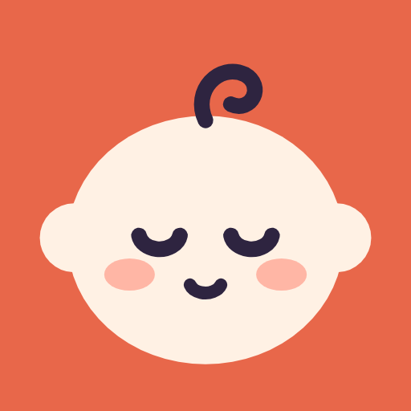

Tontiş
Gebelik & Bebek Takibi · Android
Gebelikten bebeğinin ilk yıllarına kadar yanında olan sade bir takip uygulaması. Hesap açman gerekmez; kayıtların yalnızca telefonunda kalır.
- Emzirme, uyku, biberon ve bez kaydı; kapansa da doğru süreyi tutan sayaç
- DSÖ eğrileriyle büyüme, Sağlık Bakanlığı takvimiyle aşı hatırlatmaları
- Gelişim basamakları, diş takvimi ve aylık fotoğraf günlüğü
- Ateş ve ilaç kaydı, doktora gönderilecek PDF rapor
- Hafta hafta gebelik, tekme sayacı ve kasılma zamanlayıcı
- Ninni ve beyaz gürültü
Google Play'de yakında.